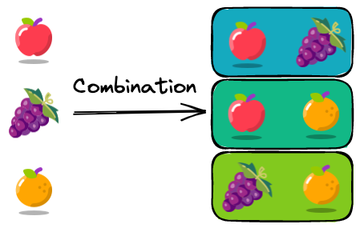

Itertools
Contents
3.2. Itertools¶

itertools is a built-in Python library that creates iterators for efficient looping. This section will show you some useful methods of itertools.
3.2.1. itertools.combinations: A Better Way to Iterate Through a Pair of Values in a Python List¶
If you want to iterate through a pair of values in a list and the order does not matter ((a,b) is the same as (b, a)), a naive approach is to use two for-loops.
num_list = [1, 2, 3]
for i in num_list:
for j in num_list:
if i < j:
print((i, j))
(1, 2)
(1, 3)
(2, 3)
However, using two for-loops is lengthy and inefficient. Use itertools.combinations instead:
from itertools import combinations
comb = combinations(num_list, 2) # use this
for pair in list(comb):
print(pair)
(1, 2)
(1, 3)
(2, 3)
3.2.2. itertools.product: Nested For-Loops in a Generator Expression¶
Are you using nested for-loops to experiment with different combinations of parameters? If so, use itertools.product instead.
itertools.product is more efficient than nested loop because product(A, B) returns the same as ((x,y) for x in A for y in B).
from itertools import product
params = {
"learning_rate": [1e-1, 1e-2, 1e-3],
"batch_size": [16, 32, 64],
}
for vals in product(*params.values()):
combination = dict(zip(params.keys(), vals))
print(combination)
{'learning_rate': 0.1, 'batch_size': 16}
{'learning_rate': 0.1, 'batch_size': 32}
{'learning_rate': 0.1, 'batch_size': 64}
{'learning_rate': 0.01, 'batch_size': 16}
{'learning_rate': 0.01, 'batch_size': 32}
{'learning_rate': 0.01, 'batch_size': 64}
{'learning_rate': 0.001, 'batch_size': 16}
{'learning_rate': 0.001, 'batch_size': 32}
{'learning_rate': 0.001, 'batch_size': 64}
3.2.3. itertools.starmap: Apply a Function With More Than 2 Arguments to Elements in a List¶
map is a useful method that allows you to apply a function to elements in a list. However, it can’t apply a function with more than one argument to a list.
def multiply(x: float, y: float):
return x * y
nums = [(1, 2), (4, 2), (2, 5)]
list(map(multiply, nums))
---------------------------------------------------------------------------
TypeError Traceback (most recent call last)
/tmp/ipykernel_38110/240000324.py in <module>
1 nums = [(1, 2), (4, 2), (2, 5)]
----> 2 list(map(multiply, nums))
TypeError: multiply() missing 1 required positional argument: 'y'
To apply a function with more than 2 arguments to elements in a list, use itertools.starmap. With starmap, elements in each tuple of the list nums are used as arguments for the function multiply.
from itertools import starmap
list(starmap(multiply, nums))
[2, 8, 10]
3.2.4. itertools.compress: Filter a List Using Booleans¶
Normally, you cannot filter a list using a list.
fruits = ["apple", "orange", "banana", "grape", "lemon"]
chosen = [1, 0, 0, 1, 1]
fruits[chosen]
---------------------------------------------------------------------------
TypeError Traceback (most recent call last)
/tmp/ipykernel_40588/2755098589.py in <module>
1 fruits = ['apple', 'orange', 'banana', 'grape', 'lemon']
2 chosen = [1, 0, 0, 1, 1]
----> 3 fruits[chosen]
TypeError: list indices must be integers or slices, not list
To filter a list using a list of booleans, use itertools.compress instead
from itertools import compress
list(compress(fruits, chosen))
['apple', 'grape', 'lemon']
3.2.5. itertools.groupby: Group Elements in an Iterable by a Key¶
If you want to group elements in a list by a key, use itertools.groupby. In the example below, I grouped elements in the list by the first element in each tuple.
from itertools import groupby
prices = [("apple", 3), ("orange", 2), ("apple", 4), ("orange", 1), ("grape", 3)]
key_func = lambda x: x[0]
# Sort the elements in the list by the key
prices.sort(key=key_func)
# Group elements in the list by the key
for key, group in groupby(prices, key_func):
print(key, ":", list(group))
apple : [('apple', 3), ('apple', 4)]
grape : [('grape', 3)]
orange : [('orange', 2), ('orange', 1)]
3.2.6. itertools.zip_longest: Zip Iterables of Different Lengths¶
zip allows you to aggregate elements from each of the iterables. However, zip doesn’t show all pairs of elements when iterables have different lengths.
fruits = ["apple", "orange", "grape"]
prices = [1, 2]
list(zip(fruits, prices))
[('apple', 1), ('orange', 2)]
To aggregate iterables of different lengths, use itertools.zip_longest. This method will fill missing values with fillvalue.
from itertools import zip_longest
list(zip_longest(fruits, prices, fillvalue="-"))
[('apple', 1), ('orange', 2), ('grape', '-')]